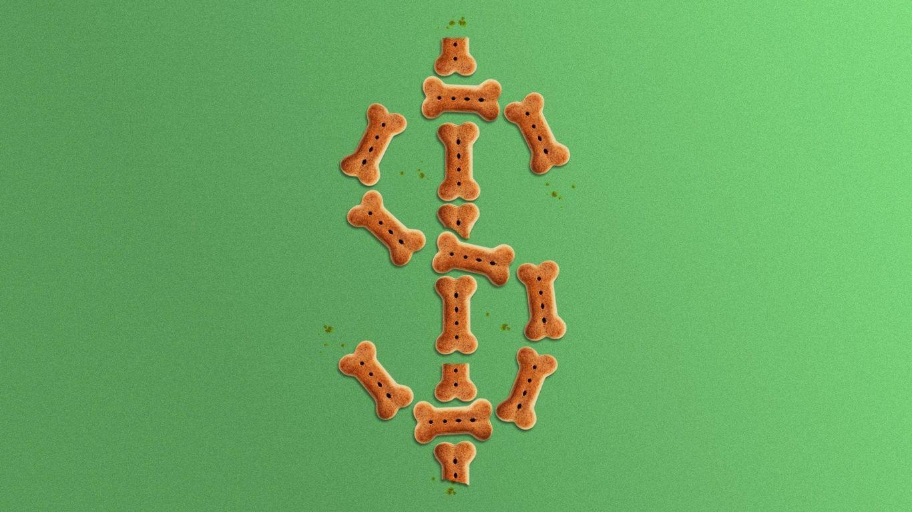

Investors bet on pet economy: State of playPet economy investments and companies: State of play Last updated September 11, 2023 Pet care and nutrition has drawn lots of interest from investors due to the "humanization" of pets and owners' repeat purchases. Why it matters: Total spending in the pet care industry is expected to increase to $277 billion by 2030, a 134% increase from 2019 levels, according to a Morgan Stanley report. Pet industry deals from the last 12 months include: - Mars Inc., the U.S. confectionary and pet food giant, agreed to acquire Synlab Vet, a veterinary laboratory diagnostics provider. - Mixlab, a veterinary pharmacy service, raised a $10 million Series A extension led by Vanterra Ventures. - PetSmart agreed to sell a minority stake to private equity firm Apollo, the Phoenix-based pet retailer announced in July. - Pet telehealth company Airvet raised $18.2 million in Series B funding. - Barkibu, a pet health insurance provider based in Spain, raised $5 million in May in a funding round led by Kfund, along with Alma Mundi Ventures. - Smalls, a cat food startup, raised a $19 million Series B round in March. - Felix&Fido, a membership-based veterinary company, raised $4 million in pre-seed funding in March. - Bundle x Joy, a pet care brand providing food and curated product bundles, raised $1 million in seed funding in March. - Digitail, a Romanian pet tech platform, raised $11 million in Series A funding in January. - Small Door Vet clinched a $40 million Series B to expand its tech-forward membership vet care platform in December 2022. - Maev, an Austin, Texas-based human-grade raw dog food brand, raised a $10 million Series A round led by VMG Partners in September 2022. - PillPack alum Gavin Cotter raised $20 million in Series A funding for his latest venture, an online pet pharmacy called Koala Health, in September 2022. - Bond Pet Foods, a Boulder, Colo.-based plant-based pet foods company, raised a $17.5 million Series A from a group of investors including Archer-Daniels-Midland Co.'s venture arm ADM Ventures, Cavallo Ventures and Genoa Ventures in September 2022. Other developments in the pet care industry include: - HelloFresh, the prepared meal-kit company, launched a premium pet food brand in August. - Petaluma, a DTC plant based pet food startup, introduced a product formulated for aging dogs. The Oakland, California-based company has raised some $500,000. - Walmart partnered with veterinary telehealth company Pawp in May to offer its services to Walmart+ subscribers. Go deeper: - View our latest coverage on everything shaping the pet industry across venture capital, private equity and M&A. - Start your free trial of Axios Pro: Retail Deals today. Editor's note: This story has been corrected to say that Felix&Fido raised $4 million in March, not Small Door Vet. |
 |